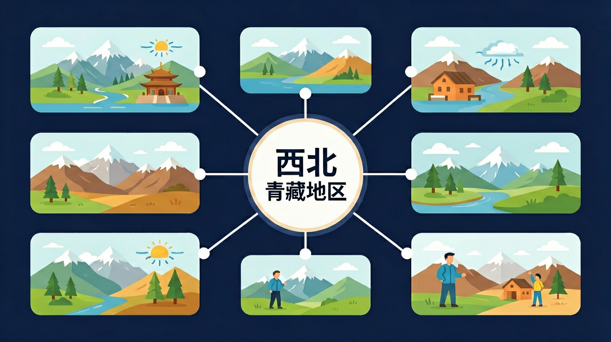

运用地图和相关资料，说出某区域的地理位置和自然地理特征，说明自然条件对该区域经济社会发展的影响，认识因地制宜的重要性。
❓ 为啥西北地区‘早穿皮袄午穿纱’？
❓ 青藏铁路沿线为什么有那么多‘散热棒’？
❓ 三江源被称为‘中华水塔’到底牛在哪？
学完这一课，这些问题你都能自信地回答。
🎯 能说出西北地区气候干旱的主要原因
🎯 能判断青藏地区高寒气候对农业生产的影响
🎯 能分析三江源地区生态环境脆弱性的形成原因
塔里木盆地降水少的主要原因是？
青藏地区特色农作物是？
西北与青藏地区是初中地理的重要内容。运用地图和相关资料，说出某区域的地理位置和自然地理特征，说明自然条件对该区域经济社会发展的影响，认识因地制宜的重要性。
结合实例，描述不同区域的差异，说明区域联系和协同发展对经济社会发展的意义。
西北地区深居内陆，干旱少雨，荒漠与草原广布，绿洲农业依赖灌溉；青藏地区“高”和“寒”，太阳辐射强，畜牧业重要，农业多在河谷。两区生态环境脆弱，开发需保护先行。
拖动缩放地图，点击城市标记查看气候或区域说明；可开河流图层对照。
1. 错误认为青藏高原全部属于高寒气候。实际上在藏南谷地出现海拔3000米以下的亚热带气候带，比如林芝年均温8.6℃，年降水793mm。错误源于将"世界屋脊"标签绝对化，忽略垂直地带性差异。正确理解应结合地形剖面图，认识到从喜马拉雅山南坡到羌塘高原存在完整的垂直气候谱系。
2. 混淆西北地区"干旱"与"荒漠化"概念。有学生用"年降水＜200mm"定义荒漠化，但塔里木盆地边缘绿洲（如和田年降水36mm）通过坎儿井灌溉形成农耕区。错误根源是未区分自然干旱与人为导致的土地退化。正确理解需要结合NDVI植被指数数据，认识到荒漠化是植被覆盖度下降10%以上的土地退化过程。
3. 误判三江源地区主要生态功能。常见表述是"中华水塔提供饮用水"，实际上该区域年产水量约500亿立方米中，仅6%进入长江黄河干流，94%维持着高寒湿地生态。错误源于过度简化水源涵养功能，正确理解应基于生态服务价值评估，包括生物多样性保护（藏羚羊种群恢复至30万头）、碳汇（泥炭地碳储量占全国40%）等多元功能。
复制提示词到 AI 学伴，生成「西北与青藏地区」的示意图或结构提纲；也可以上传你手绘的示意图，请 AI 学伴点评。
复制后可粘贴到 AI 学伴继续对话。
西北抓“干”，青藏抓“高寒”；都强调生态脆弱与可持续发展。
常见误区：常见误区是忽视两区生态脆弱，盲目套用东部发展模式。
西北地区自然景观以？
1. 青藏铁路冻土路基技术。在可可西里段采用"碎石通风路基"专利技术，通过粒径30-50cm的碎石层形成空气对流，将地基温度稳定在-1.5℃。这直接应用了青藏高原多年冻土厚度与地温梯度数据，解决了全球海拔最高铁路的轨道变形难题。
2. 河西走廊制种农业。张掖市利用日照时数3000小时/年、昼夜温差15℃的气候特征，培育出占全国玉米种子产量43%的制种基地。技术人员根据干燥度指数1.5-4.0的梯度差异，精确规划不同作物的制种区域。
3. 三江源生态大数据平台。通过卫星遥感结合地面监测站，实时追踪579个高原湖泊的面积变化。2022年数据显示扎陵湖面积较2000年扩大12.8%，为应对气候变化提供决策依据。这套系统依赖对高寒草甸NDVI、冻土活动层厚度等20余项生态参数的持续监测。
1. 问题：西北地区年降水量200mm等值线大致与长城重合，这是巧合还是必然？分析线索：从季风区与非季风区界线（大兴安岭-阴山-贺兰山-巴颜喀拉山）切入，考虑夏季风携带水汽的最远输送距离；对比汉代长城选址与400mm等降水线的空间关系，思考古代军事防御与自然地理界限的耦合性。
2. 问题：青藏高原隆起导致我国西部干旱化，但为什么塔里木盆地反而形成世界第二大流动沙漠？分析路径：从行星风系角度比较北纬40°大陆东西岸差异；结合地形雨影效应，测算昆仑山（海拔7000m）对印度洋水汽的阻挡率；用盆地闭合性解释局地水分循环特点，参考塔克拉玛干沙漠腹地年蒸发量3000mm的数据。
先要破解"西北地区干旱"这个核心命题。从全球气压带分布切入，解释副热带高压控制下形成塔克拉玛干沙漠的动力机制，这里年降水不足50mm但蒸发量高达3000mm。接着发现特殊案例：天山北坡的伊犁河谷年降水可达600mm，这是西风带携带大西洋水汽的最后"遗产"，造就了"塞外江南"。然后转向青藏高原，其隆起不仅塑造了自身的高寒景观——比如唐古拉山永冻层厚达120米，更通过阻挡印度洋水汽，加剧了西北干旱。这种联动关系在河西走廊体现得淋漓尽致：祁连山冰川融水滋养出连片绿洲，但近30年冰川退缩率15%已威胁到石羊河流域的生态安全。最后落到人地关系，比较两种应对策略：古代坎儿井利用1/1000的地表坡度实现自流灌溉，现代则采用滴灌技术将农业用水效率提升70%。而三江源国家公园的建立，标志着从资源开发转向生态补偿的范式转变，其核心是认识到高寒草甸每公顷年固碳量达1.5吨的生态价值。
关于西北地区荒漠化治理，正确的是
分析青藏铁路建设中采取的高架桥、野生动物通道等措施
先独立作答，再点选项查看对错与错因。
青海湖畔南北景观差异的主要原因是
青藏地区种植业主要分布在河谷地带，根本原因是
西北地区城市多呈串珠状分布在
青藏地区被称为'____'，其独特气候形成的主要原因是____。
答案：世界屋脊 海拔高
平均海拔4000米以上导致高寒
塔里木盆地边缘的____农业依赖____补给水源。
答案：绿洲 高山冰雪融水
降水稀少需依靠冰川融水
（中考真题）西北地区瓜果特别甜的根本原因是？
（迁移题）若在青藏高原发展旅游业，最需防范的是？
（综合题）三江源保护措施中，最不合理的是？
✅ 昼夜温差大但年均温不高
💡 混淆‘温差大’与‘温度高’概念
✅ 主要发展河谷农业（青稞为主）
💡 忽视海拔对积温的影响
迁移任务：找一道与「西北与青藏地区」相关的练习题或生活情境，用本课方法完整解答一遍。
口诀：西北干青藏寒，三山夹两盆记心间
类比：青藏高原像冰箱顶，西北盆地像烤箱底
复述本课两个核心概念的定义。
用本课方法分析一个新例子。
有同学认为：认为西北地区全年高温 —— 请说明错在哪里。
有同学认为：觉得青藏高原适合种水稻 —— 请说明错在哪里。
把还没弄明白的地方写下来问 AI 学伴。它会先帮你找到卡住的地方，再给你一个小小的提示，让你自己往前走一步。